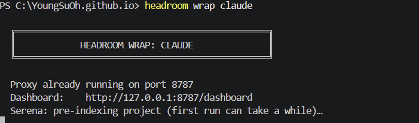
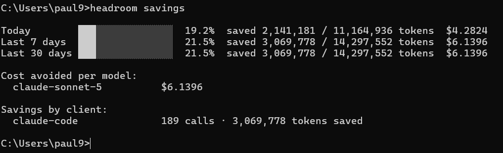

Claude Code의 토큰 흐름
Claude Code로 작업할 때 실제 내부에서는 이런 순서가 반복됩니다.
이 흐름에서 토큰 관점의 낭비는 크게 세 지점에서 생깁니다.
파일 하나를 여러 번 다시 grep하고 다시 읽는다.
Graphify가 해결
읽어야 하는 로그·파일·도구 응답이 필요 이상으로 크다.
Headroom이 해결
Claude가 요청받은 것보다 많은 코드를 생성한다.
Ponytail이 해결
셋을 합치면 하나의 파이프라인이 됩니다.
1. Graphify — "다시 뒤지는 비용"을 줄임
예를 들어 다음과 같은 계층을 가진 프로젝트가 있다고 가정합니다.
여기에 다음과 같은 질문이 들어왔다고 하면:
PaymentService.approve()가 호출하는 DB 작업과 Kafka 이벤트 흐름을 분석해줘.Graphify가 없다면
Claude는 실제 파일을 하나씩 열어보며 컨텍스트를 채웁니다. 질문 하나에도 여러 번의 검색·읽기 왕복이 발생하고, 그 결과들 사이에는 아무 구조도 남지 않습니다 — Claude 혼자 5개의 파일에 5번 따로 접속하는 별 모양 그래프입니다.
Graphify가 있다면
Graphify는 이 관계를 미리 그래프로 인덱싱해 둡니다. 전체 코드베이스 그래프 중 질문과 관련된 서브그래프만 한 번에 잘라서 돌려줍니다.
approve()와 연결된 서브그래프만 한 번의 쿼리로 잘라 온다.2. Headroom — "읽기는 하되, 최소한으로 읽게 함"
Headroom은 Claude와 실제 도구 사이에 끼어 있는 로컬 프록시입니다. Claude Code의 plugin/skill이 아니라, 도구 호출과 응답이 오가는 경로 자체를 가로채서 압축합니다.
예를 들어 테스트를 돌린다고 가정합니다.
원본 로그는 이런 식으로 쏟아집니다.
> Task :test
PaymentServiceTest > approve_shouldSucceed() PASSED
PaymentServiceTest > approve_whenInsufficientBalance_shouldThrow() PASSED
PaymentServiceTest > approve_whenDuplicateRequest_shouldBeIdempotent() FAILED
org.opentest4j.AssertionFailedError: expected: <true> but was: <false>
at PaymentServiceTest.approve_whenDuplicateRequest_shouldBeIdempotent(PaymentServiceTest.java:88)
...
(총 480줄, 42개 테스트)Headroom을 거치면 Claude에게는 이 정도만 도달합니다.
[Headroom] 42 tests, 2 failed · 480 lines → 12 lines 로 압축
FAILED: approve_whenDuplicateRequest_shouldBeIdempotent (PaymentServiceTest.java:88)
FAILED: refund_whenAlreadyRefunded_shouldThrow (PaymentServiceTest.java:142)
retrieve: hash=7a3f21c9 (원본 전체가 필요하면 여기서)retrieve(hash)로 원본 일부를 다시 불러옵니다. 필요 없는 480줄을 매번 컨텍스트에 태우지 않는 것이 핵심입니다.3. Ponytail — "Claude가 쓰는 양"을 줄임
Ponytail은 Claude가 코드를 생성하기 전에 필요 이상의 abstraction·class·interface·boilerplate를 만들지 못하게 억제합니다.
private boolean isValidPayment(Payment payment) {
if (payment == null) {
return false;
}
if (payment.getStatus() == null) {
return false;
}
return payment.getStatus() == PaymentStatus.READY;
}return payment != null
&& payment.getStatus() == PaymentStatus.READY;셋이 같이 사용한다면?
설치 및 실행
설치
claude plugin marketplace add DietrichGebert/ponytail --scope user
claude plugin install ponytail@ponytail --scope user
uv tool install graphifyy && graphify install
uv tool install --python 3.13 "headroom-ai[proxy,mcp]"실행
headroom wrap claude
headroom wrap claude — 프록시가 8787 포트에서 뜨고, 이후 Claude Code 세션이 이 프록시를 거쳐 동작한다.실제로 효율화가 됐는지 확인하기
claude plugin list # 플러그인이 연결됐는지 확인
headroom savings # 토큰 절감 확인
headroom savings — 오늘/최근 7일/최근 30일 기준 토큰·비용 절감 내역.- 오늘
- 19.2% 절감 · 2,141,181 / 11,164,936 tokens · $4.2824
- 최근 7일
- 21.5% 절감 · 3,069,778 / 14,297,552 tokens · $6.1396
- 최근 30일
- 21.5% 절감 (7일과 동일 — 아직 사용 기간이 30일이 안 돼 7일 수치와 같게 잡힘)
- 모델별 절감
claude-sonnet-5— $6.1396- 클라이언트별 절감
claude-code— 189회 호출, 3,069,778 tokens 절감